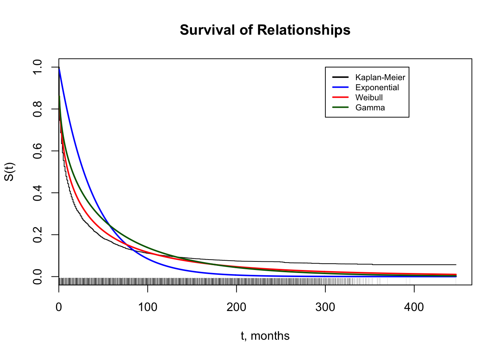
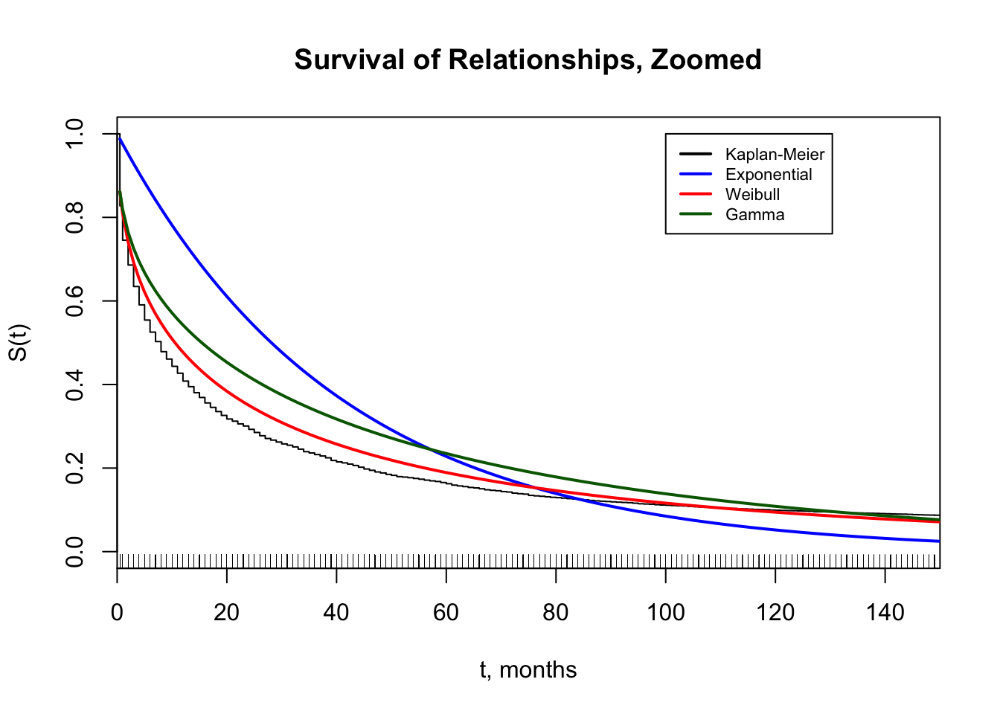
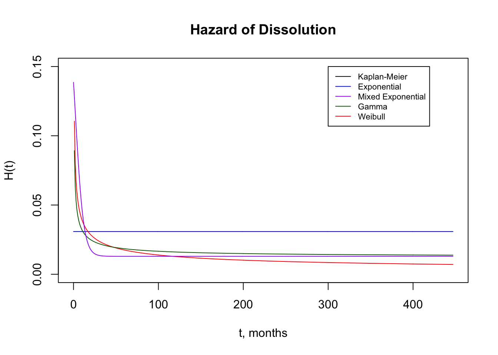
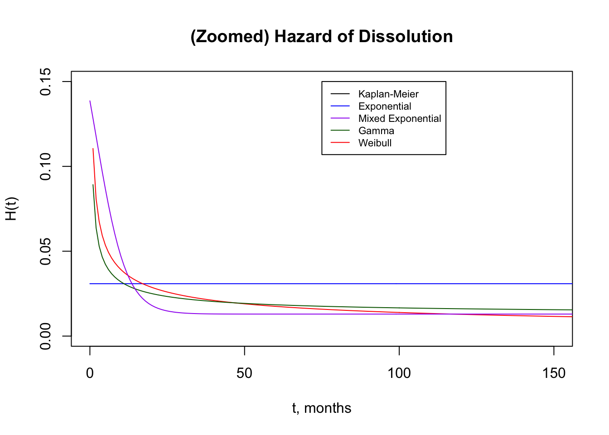

Chapter 2 Preliminary Models
2.1 Plots


2.2 Summaries / Model Comparison
## [1] "Exponential"## --------------------------------------------
## Maximum Likelihood estimation
## BHHH maximisation, 16 iterations
## Return code 2: successive function values within tolerance limit
## Log-Likelihood: -52281.57
## 1 free parameters
## Estimates:
## Estimate Std. error t value Pr(> t)
## scale 0.0308549 0.0002953 104.5 <2e-16 ***
## ---
## Signif. codes: 0 '***' 0.001 '**' 0.01 '*' 0.05 '.' 0.1 ' ' 1
## --------------------------------------------## [1] "Weibull"## --------------------------------------------
## Maximum Likelihood estimation
## BHHH maximisation, 21 iterations
## Return code 2: successive function values within tolerance limit
## Log-Likelihood: -46994.69
## 2 free parameters
## Estimates:
## Estimate Std. error t value Pr(> t)
## shape 0.550004 0.005421 101.45 <2e-16 ***
## scale 18.496096 0.395483 46.77 <2e-16 ***
## ---
## Signif. codes: 0 '***' 0.001 '**' 0.01 '*' 0.05 '.' 0.1 ' ' 1
## --------------------------------------------## [1] "Gamma"## --------------------------------------------
## Maximum Likelihood estimation
## BHHH maximisation, 22 iterations
## Return code 2: successive function values within tolerance limit
## Log-Likelihood: -47912.51
## 2 free parameters
## Estimates:
## Estimate Std. error t value Pr(> t)
## shape 0.427410 0.007388 57.85 <2e-16 ***
## scale 78.689121 1.864140 42.21 <2e-16 ***
## ---
## Signif. codes: 0 '***' 0.001 '**' 0.01 '*' 0.05 '.' 0.1 ' ' 1
## --------------------------------------------## [1] "Mixed Exponential (Short/Long Rels)"## --------------------------------------------
## Maximum Likelihood estimation
## BHHH maximisation, 12 iterations
## Return code 2: successive function values within tolerance limit
## Log-Likelihood: -46804
## 3 free parameters
## Estimates:
## Estimate Std. error t value Pr(> t)
## logLambda1 -1.51871 0.01627 -93.34 <2e-16 ***
## logLambda2 -4.34590 0.01919 -226.42 <2e-16 ***
## logitWeight1 0.44642 0.03100 14.40 <2e-16 ***
## ---
## Signif. codes: 0 '***' 0.001 '**' 0.01 '*' 0.05 '.' 0.1 ' ' 1
## --------------------------------------------Model Comparison / AIC
| Model | AIC |
|---|---|
| Exponential | 1.0456510^{5} |
| Weibull | 9.399310^{4} |
| Gamma | 9.582910^{4} |
| Mixed Exp | 9.361410^{4} |
2.3 Limitations / Future Work
- Statistical estimator - Kirk uses Kolmogorov-Smirnov Distance
- Random Effects model for serial observations?
- Weighting (current models ignore survey weights)
- Covariates (age dynamics, race)
2.4 Incomplete Models
- mixed weibull
- mixed gamma (see “presentations/csss544finalproject.Rmd”)